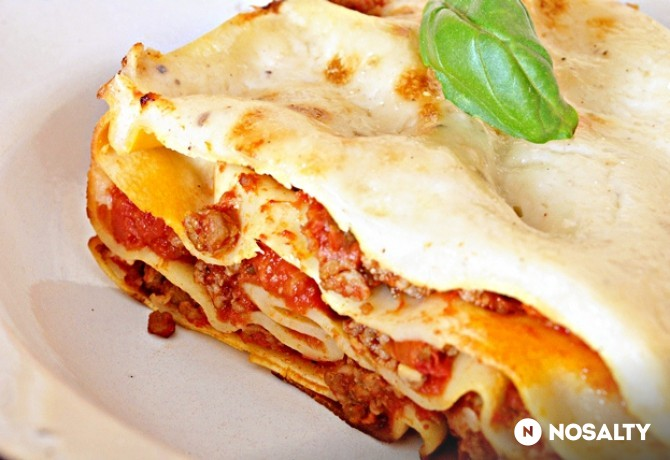

Villámgyors lasagne
Vissza
Forrás

Story
A lasagne nem tartozik a leggyorsabban elkészíthető receptek közé. A recept jelzőjében a villám itt is enyhe túlzás, de ez a leggyorsabb lasagne, amit valaha csináltam, az íze pedig nem különbözik a sokáig készülő, hétvégi társától. Kezdettől tálalásig kb. 45 perc, ez pedig a főzést nem igénylő tésztának és a párhuzamosan elkészíthető hozzávalóknak köszönhető. Még egy hétköznapi vacsorának is simán elmegy!
Hozzávalók
- 250 g barilla lasagne tészta (főzés nélküli)
- 600 g hámozott, kockázott paradicsom
- 5 dl tej
- 400 g darált marhahús
- 5 dkg vaj
- 3 ek liszt
- 200 g parmezán
- 2 késhegynyi frissen reszelt szerecsendió
- 5 levél bazsalikom
- só
- bors
- 3 babérlevél
- 2-2 ek olívaolaj
Elkészítés
- A húst 2 ek olívaolajon megfuttatjuk. Sózzuk, borsozzuk, hozzátesszük a babérlevelet, majd 10-12 percig kis lángon főzzük.
- Közben 2 ek olívaolajon főzni kezdjük a paradicsomot. Kb. 10-15 percig rotyogtatjuk.
- A húst a szósszal összeöntjük, és újabb 15 percig pöfögtetjük kis lángon. Az utolsó 3 percben hozzáadjuk a felvágott bazsalikomot.
- Közben a vajat megolvasztjuk, hozzátesszük a lisztet, kis lángon elkeverjük, és lassan, folyamatos kevergetés mellett hozzáöntjük a tejet.
- Sózzuk, borsozzuk, hozzáreszeljük a szerecsendiót, majd folyamatosan kevergetve sűrűre főzzük. Hozzáadjuk a reszelt parmezán felét.
- Elzárjuk alatta és a paradicsomos szósz alatt is a gázt.
- Egy 25x35-ös tepsit kivajazunk, és leteszünk egy adag főzést nem igénylő lasagne tésztát (barilla).
- Ráteszünk egy adag húsos ragut, majd ismét tésztát. Addig rétegezzük, amíg a hozzávalók elfogynak. Az utolsó adag tésztára a besamel kerül. A tetejére tegyük a parmezánt, majd toljuk 180 fokra előmelegített sütőbe.
- Süssük 20 percig, majd még 10 percig hagyjuk állni, mielőtt felvágjuk.
Statisztika
| Bekülve: |
2013.05.03 |
| Tegnapi nézettég: |
193 |
| Össznézettség: |
538 426 |
| Elkülve: |
98 |
| Receptkönyben: |
2604 |
| Elkészítve: |
298/318 |
| Facebookon megjelent: |
7 |